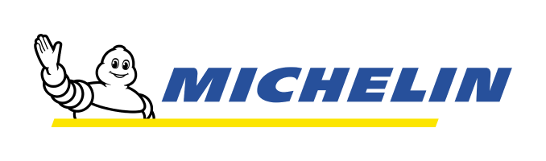

Steven Dyer
Mechatronics Engineering Student
I am a mechatronics engineering student attending Memorial University of Newfoundland, expecting to graduate in May 2028. I have a strong interest in robotics, embedded systems, and firmware development. I develop firmware for various student design teams, personal projects, and through my professional work.
About Me
Bachelor of Mechatronics Engineering
GPA: 3.75/4.0
- Software Team Lead for Paradigm Engineering
- Electronics Team Member for Memorial Baja
- Co-Class Representitive for MUN Mechatronics 2028
- PEGNL Engineering Scholarship
- Ray Bonia Memorial Scholarship
- Cori Brown Memorial Award
- Top 1% of Dave Matthews Band Listeners
Experience

Waterville, NS · Jan 2025 - Apr 2025, Sept 2025 - Dec 2025
Michelin is a global leader in the automitve industry and tire manufacturing. As an electrical engineering intern, I worked with the Innovation team on implementing new technologies into the tire manufactuering process. My work included:
- Developed firmware for a new standards training lab on a ESP32 microcontroller using C to establish I2C and UART communication drivers to several sensors.
- Led a team of four technicians to install a new energy monitoring device by first drafting all necessary electrical schematics and writing PLC ladder logic, resulting in improved energy trend tracking.
- Fine-tuned a Gocator 3D sensor via built-in emulation software, enhancing the automated quality inspection system and improving dimensional measurement accuracy by 60%.
- Designed and proposed a closed-loop control system to enhance temperature regulation for a tire membrane test bed’s heating element, including the full schematic design in DraftSight.
St. John's, NL · Aug 2025 - Present
Paradigm Engineering is the largest design and competition team at the Memorial University of Newfoundland. The team has competed at the SpaceX Hyperloop Pod Competitions, The Boring Company's 'Not-a-Boring' competition, the Intelligent Ground Vehicle competition, and the Autonomous Karting Series. Paradigm is gearing up to compete in the Autonomous Karting Series in 2026, creating a fully autonomous, self-driving go-kart:
- Wrote on board firmware, including low-level drivers for CAN, UART, and PWM, using C on a STM32G4 microcontroller to facilitate communication between a Jetson Orin, a Pixhawk 6C, and several motors.
- Developed a computer vision system using a ZED 2i Stereo Camera and PyTorch, implementing a CNN to detect white lines on the race track, enabling autonomous navigation.
- Designed the software architecture of an autonomous go-kart which achieved second place at the 2025 Autonomous Karting Series national grand-prix.
- Led and mentored software team by preparing onboarding resources, documentation, and task assignments, resulting in significant contributions and experience-gain by 10+ members.
St. John's, NL · Sept 2023 - Present
Memorial Baja is a student design team building an single-seat off-road Baja SAE racing vehicle. The team is currently preparing to compete in the Baja SAE competion in 2026. As an electronics team member, I contribute to the development of all electronic systems on the vehicle:
- Implemented a hall effect sensor program using FreeRTOS on a ESP32 microcontroller to read the RPM of a Baja SAE vehicle and display data onto a digital dashboard.
- Performed testing and troubleshooting of electronic systems using multimeters, oscilloscopes, and logic analyzers, ensuring accurate sensor readings.
St. John's, NL · May 2024 - Aug 2024
TechnipFMC is a global energy company that provides technolgies, project management, and engineering services to the oil, gas, and broader energy industry. As a project engineering intern, I worked with the Project Engineering department assisting in the execution of large-scale subsea projects. My work included:
- Managed master equipment certification folder using Excel to streamline data retrieval for audits and inspection.
- Conducted site inspections to monitor subsea project progress and ensure compliance with quality standards.
- Performed calculations on reel lift rigging assembly using knowledge of statics to ensure the assembly can tolerate expected loads.